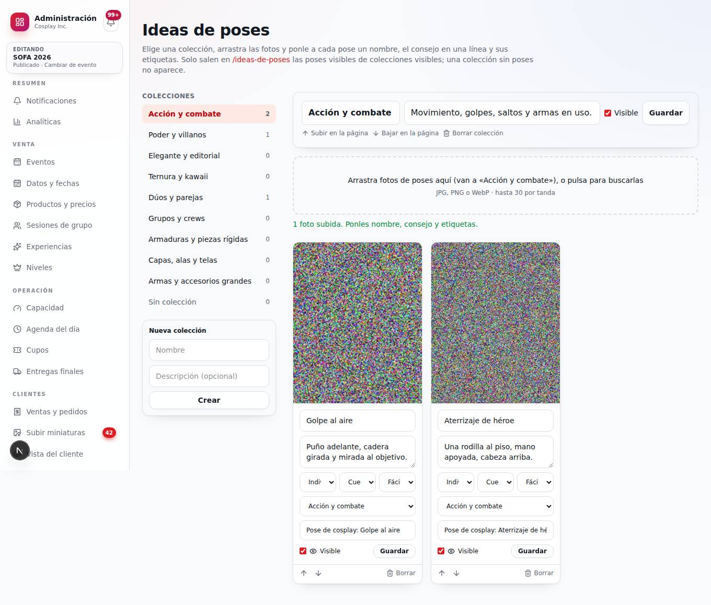
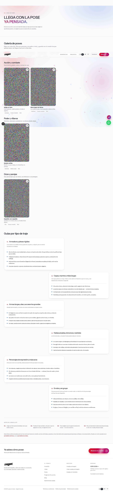
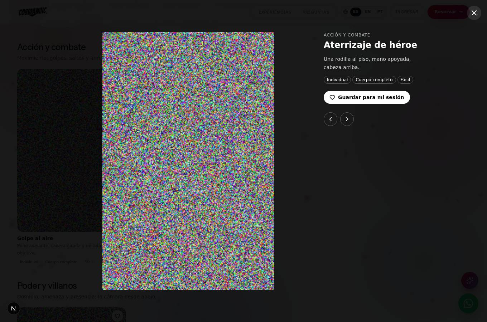

Cosplay Inc · Octubre de 2026
Ideas de poses: cómo se organizan
La recomendación son dos niveles. Las colecciones dicen la intención, que es como piensa un cosplayer antes de llegar al set. Las etiquetas son filtros que cruzan todas las colecciones. Con solo carpetas, una pose de dúo y de acción tendría que estar en dos sitios. Con etiquetas, vive en una colección y aparece al filtrar «Dúo».
Colecciones de partida (se pueden renombrar, ordenar o borrar)
| Colección | Para qué |
|---|---|
| Acción y combate | Movimiento, golpes, saltos y armas en uso. |
| Poder y villanos | Dominio, amenaza y presencia: la cámara desde abajo. |
| Elegante y editorial | Pausa, líneas limpias y mirada de revista. |
| Ternura y kawaii | Gestos dulces, manos y expresiones. |
| Dúos y parejas | Dos personajes que se miran, se enfrentan o se protegen. |
| Grupos y crews | Formaciones para tres o más. |
| Armaduras y piezas rígidas | Lo que se puede hacer cuando el traje no se dobla. |
| Capas, alas y telas | Movimiento, viento y silueta. |
| Armas y accesorios grandes | Diagonales y encuadre para lo que no cabe. |
Las tres últimas son las mismas de las guías escritas que ya tiene la página: así la foto y el texto se refuerzan.
Etiquetas (filtros)
- Personas: individual, dúo, grupo.
- Encuadre: cuerpo completo, medio cuerpo, retrato, detalle.
- Nivel: fácil, media, avanzada.
Cada pose
Una foto, un nombre que se recuerde («Aterrizaje de héroe»), el consejo en una línea («Una rodilla al piso, mano apoyada, cabeza arriba») y sus etiquetas. En la página, el corazón la guarda en «Mis poses»: la persona llega al set con su lista en el celular y se la muestra al fotógrafo.
Cómo se usa
- Administración → Sitio → Ideas de poses.
- Elige la colección a la izquierda y arrastra las fotos (hasta 30 por tanda).
- A cada pose ponle nombre, consejo y etiquetas, y oprime «Guardar».
- Con «Visible» decides qué sale. Una colección sin poses visibles no aparece en la página.
Sugerencia: usa fotos propias de sesiones (con autorización de la persona) o fotos de referencia hechas por el equipo. No uses imágenes de internet de otros fotógrafos.
Capturas (entorno de prueba, con imágenes de relleno)


